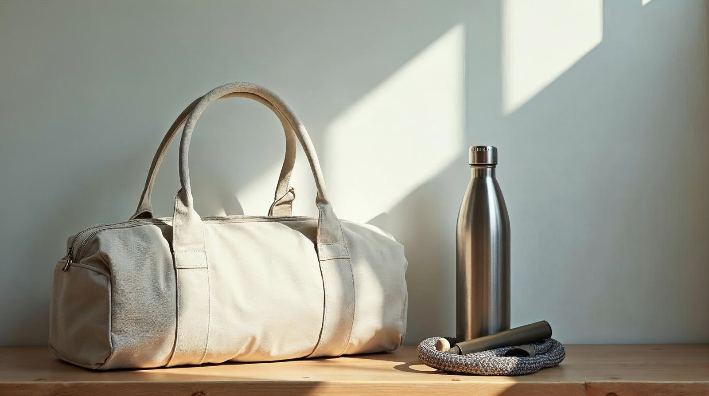
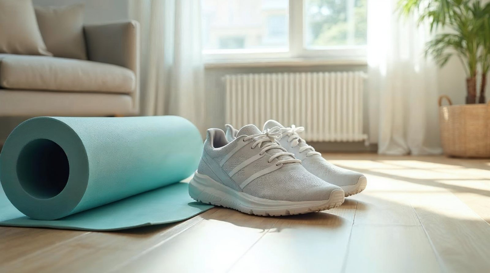
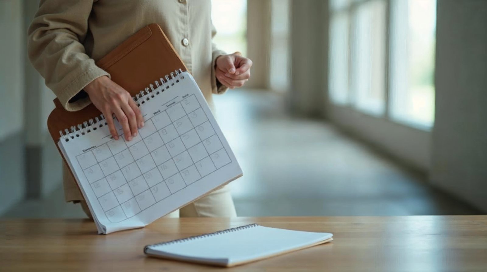

이종호 한의사 감수좋은꿈참사랑한의원 대표원장 (한의사 면허번호 19769)발행 2026-11-23 · 수정 2026-11-26
이 글의 차례
- 왜 운동 습관을 알아야 할까요
- 먼저 이렇게 여쭙니다
- 일상에서 먼저 해 볼 수 있는 것
- 한의원에서 함께 살필 수 있는 경우
- 자주 하는 오해
- 예를 들면 이런 경우입니다
- 스스로 점검해 보세요
- 이렇게 기록해 오시면 상담이 쉬워집니다
- 운동 종류별로 이렇게 알려 주세요
- 운동 뒤 근육통과 살펴볼 통증은 어떻게 다를까요?
- 아픈 동작을 영상으로 찍어 와도 되나요?
- 진료 뒤 운동을 다시 늘릴 때는 어떻게 하나요?
- 왜 잠과 식사까지 여쭐까요?
- 예전 부상은 이렇게 정리해 오세요
- 진통제와 보충제는 왜 여쭐까요?
- 운동 전후로 이렇게 해 보세요
- 운동화와 장비도 함께 살펴보세요
- 쉬는 동안 체력이 떨어질까 걱정된다면
- 운동을 막 시작한 분도 알려 주세요
- 계절이 바뀔 때는 이런 점을 살펴보세요
- 운동하는 시간대도 함께 알려 주세요
- 함께 운동하는 사람이 본 모습도 도움이 됩니다
- 이런 증상은 먼저 확인이 필요합니다
- 얼마나 지켜보고, 언제 확인하면 좋을까요
- 처음 오시면 이렇게 진행합니다
- 관련 글
운동을 꾸준히 하는 분이라면 진료 전에 운동 종류와 주당 횟수, 강도, 최근 운동량을 갑자기 늘렸는지, 예전에 다친 부위를 알려 주세요. 같은 무릎 통증이라도 러닝을 늘린 뒤인지, 헬스 하체 운동 뒤인지에 따라 살펴볼 곳이 달라지기 때문입니다. 한강변 러닝이나 공원 운동을 즐기는 분들이 많이 묻는 내용입니다.
왜 운동 습관을 알아야 할까요
- 운동량이나 강도를 짧은 기간에 크게 늘리면 같은 부위에 부담이 쌓여 불편이 생기기 쉽습니다.
- 반복되는 동작은 특정 힘줄이나 관절에 부담을 몰리게 할 수 있습니다.
- 예전에 다친 부위를 아끼다 보면 다른 부위가 대신 무리하는 경우가 있습니다.
- 운동은 많이 하는데 잠과 휴식이 부족하면 피로가 쌓여 회복이 더딜 수 있습니다.
먼저 이렇게 여쭙니다
- 하는 운동의 종류(러닝, 헬스, 구기, 요가 등)와 주당 횟수는 어떤가요?
- 최근 운동량이나 강도를 갑자기 늘렸나요?
- 불편이 시작된 시점과 어느 동작에서 아픈지 알려 주세요.
- 이전에 다치거나 수술한 부위가 있나요?
- 단백질 보충제나 다른 보충제를 드시나요?

일상에서 먼저 해 볼 수 있는 것
- 운동량은 일주일에 조금씩만 늘리기
- 아픈 동작이 있다면 그 동작만 잠시 쉬고 다른 부위 운동으로 바꾸기
- 운동 전후로 가볍게 몸을 풀고 정리 운동하기
- 운동한 날과 통증이 있었던 날을 함께 기록하기
한의원에서 함께 살필 수 있는 경우
- 운동 뒤 같은 부위가 반복해서 뻐근하고 아플 때 동작과 자세를 함께 살핍니다.
- 운동은 하는데 피로가 쌓이고 잠이 얕을 때 운동 시간과 휴식 리듬을 함께 여쭙니다.
- 예전 부상 부위가 운동할 때마다 신경 쓰일 때 움직임을 직접 확인합니다.
좋은꿈참사랑한의원에서는 아픈 동작을 직접 보여 주시면 주변까지 넓게 살피고, 필요하다고 판단될 때 초음파로 힘줄과 인대를 확인한 뒤 침·약침·추나·체외충격파 등 상태에 맞는 방법을 정합니다. 운동을 쉴지, 강도를 줄일지도 상태에 맞춰 함께 정합니다.
자주 하는 오해
- 아파도 운동으로 풀어야 한다고 여기기 쉽지만, 같은 동작에서 반복되는 통증은 잠시 그 동작을 쉬며 살펴보는 것이 먼저일 수 있습니다.
- 운동을 오래 했으니 내 몸은 내가 잘 안다고 넘기는 분도 있지만, 운동량을 늘린 시기와 통증 시작이 겹치는지는 기록으로 확인해 보세요.
- 진료를 받으면 운동을 완전히 멈춰야 한다고 걱정하는 분도 있는데, 쉴지 줄일지는 상태를 보고 함께 정합니다.
예를 들면 이런 경우입니다
- 예를 들어 주 2회 하던 러닝을 대회를 앞두고 갑자기 주 5회로 늘린 뒤 무릎 바깥쪽이 아픈 경우라면, 늘린 시기와 거리, 운동화를 바꿨는지를 함께 여쭙습니다.
- 예를 들어 헬스장에서 어깨 운동 무게를 올린 뒤 팔을 들 때 어깨 앞쪽이 걸리는 분이라면, 아픈 각도를 직접 보여 주시면 필요할 때 초음파로 힘줄을 확인하고 그 동작을 얼마나 쉴지 함께 정합니다.
- 예를 들어 예전에 발목을 접질린 뒤로 운동할 때마다 반대쪽 무릎이나 허리가 뻐근한 경우라면, 예전 부상 부위의 움직임부터 함께 살핍니다.

스스로 점검해 보세요
- 최근 한 달 사이 운동 횟수나 무게, 거리를 늘렸다
- 운동화나 운동 장소(트랙, 언덕, 실내)를 바꿨다
- 같은 동작에서 같은 부위가 반복해서 아프다
- 예전에 다친 부위가 있다
- 운동 뒤 잠이 얕거나 피로가 다음 날까지 남는다
- 보충제나 진통제를 자주 먹는다
해당하는 항목은 진료 시작 때 운동 이야기와 함께 말씀해 주세요. 특히 첫 두 항목은 통증이 시작된 시기와 겹치는지 살피는 데 도움이 됩니다.
이렇게 기록해 오시면 상담이 쉬워집니다
- 최근 한 달의 운동 종류, 횟수, 강도
- 통증이 시작된 날과 그날 한 운동
- 예전 부상과 받은 검사
- 복용 중인 약과 보충제
운동 종류별로 이렇게 알려 주세요
- 러닝: 일주일 동안 뛴 거리, 주로 달리는 코스(평지, 언덕, 트랙), 지금 운동화를 신은 기간
- 헬스: 부위별 운동 순서, 최근 올린 무게, 아플 때 하던 동작 이름(스쿼트, 벤치프레스 등)
- 축구·농구·배드민턴: 점프와 방향 전환이 많은지, 운동하는 바닥(인조잔디, 마룻바닥)
- 요가·필라테스: 아픈 자세의 이름과 무리하게 늘렸던 기억
- 수영·자전거: 주로 하는 영법, 안장 높이나 자전거를 바꾼 시기
운동 이름만 들어도 부담이 몰리는 자리를 어느 정도 짐작할 수 있어, 처음 이야기를 시작하기가 쉬워집니다.
운동 뒤 근육통과 살펴볼 통증은 어떻게 다를까요?
운동 다음 날 허벅지나 어깨가 넓게 뻐근하고, 움직이다 보면 조금 풀리며, 2~3일 사이 가라앉는다면 흔한 근육통일 가능성이 큽니다. 양쪽이 비슷하게 뻐근한 것도 특징입니다.
반대로 손가락 하나로 아픈 자리를 짚을 수 있거나, 늘 한쪽만 아프거나, 같은 동작에서 매번 걸리거나, 운동을 시작하고 아파지는 시점이 점점 빨라진다면 근육통으로 넘기기보다 진료 때 말씀해 주세요.
아픈 동작을 영상으로 찍어 와도 되나요?
네, 도움이 됩니다. 진료실에서는 무게를 들거나 오래 달릴 수 없어 아픈 순간이 재현되지 않는 경우가 많습니다. 휴대폰으로 옆이나 뒤에서 몇 초만 찍어 오셔도 자세를 함께 보기 좋습니다.
러닝 기록 앱이나 운동 일지가 있다면 최근 한두 달 화면을 캡처해 오세요. 통증이 시작된 날 앞뒤로 운동량이 어떻게 바뀌었는지 한눈에 볼 수 있습니다.
진료 뒤 운동을 다시 늘릴 때는 어떻게 하나요?
아픈 동작을 뺀 운동부터 다시 시작하고, 강도는 평소보다 낮춰 보세요. 운동한 다음 날 아침의 느낌이 가장 좋은 기준입니다. 다음 날 괜찮으면 조금씩 늘리고, 뻐근함이 더해졌다면 한 단계 낮춥니다.
다음 진료 때 어떤 운동을 얼마나 했는지, 다음 날 어땠는지를 알려 주시면 다음 단계를 함께 정합니다. 대회나 산행처럼 날짜가 정해진 일정이 있다면 처음부터 알려 주세요. 남은 기간에 맞춰 무리하지 않는 계획을 세웁니다.
왜 잠과 식사까지 여쭐까요?
운동을 열심히 하는 분일수록 잠과 식사를 놓치기 쉽습니다. 늦은 밤 강하게 운동한 뒤 잠들기 어렵거나, 식사를 거른 채 운동하는 날이 이어지면 같은 운동에도 피로가 더 쌓일 수 있습니다.
그래서 진맥하면서 운동 시간대와 잠든 시각, 운동 전후 식사를 함께 여쭙니다. 운동 계획을 짤 때 쉬는 날과 잠자는 시간까지 한 칸에 적어 보시면 회복 리듬을 함께 살피기 좋습니다.
예전 부상은 이렇게 정리해 오세요
다친 해와 부위, 그때 받은 검사와 치료, 수술 여부, 지금도 남아 있는 느낌을 한 줄씩 적어 오세요. 예를 들어 "5년 전 축구하다 오른쪽 발목 접질림, 깁스 3주, 지금도 계단 내려갈 때 불안함"처럼요.
그 뒤로 일부러 피하게 된 동작이 있다면 함께 적어 주세요. 몸이 그 자리를 아끼느라 다른 쪽이 대신 일하고 있는 경우가 있어, 지금 아픈 곳을 이해하는 데 중요한 단서가 됩니다.
진통제와 보충제는 왜 여쭐까요?
운동 전에 진통제를 먹고 운동하는 분이 있습니다. 그렇게 하면 운동 중에 느끼는 통증의 정도를 스스로 가늠하기 어려워질 수 있습니다. 얼마나 자주 드시는지 알려 주시면 통증의 흐름을 더 정확히 짐작할 수 있습니다.
단백질 보충제, 크레아틴, 비타민처럼 운동과 함께 챙기는 것도 이름과 양을 알려 주세요. 한약을 상담할 때 겹치는 것이 있는지 확인하는 데 쓰입니다.
운동 전후로 이렇게 해 보세요
운동 전에는 5~10분 정도 가볍게 걷거나 제자리에서 몸을 데워 주세요. 오늘 할 운동을 가벼운 무게로 몇 번 먼저 해 보는 것도 좋습니다. 운동 뒤에는 바로 앉거나 눕기보다 몇 분 천천히 걸으며 숨을 고르세요.
스트레칭은 반동을 주지 말고 천천히 늘린 채 숨을 쉬며 머무는 방식이 편합니다. 아픈 자리를 일부러 세게 늘리는 것은 피하고, 그 부위는 진료 때 어떻게 할지 함께 정합니다.
운동화와 장비도 함께 살펴보세요
러닝화 바닥의 바깥쪽만 유난히 닳았거나, 오래 신어 쿠션이 꺼졌다면 함께 가져와 보여 주세요. 신발 바닥이 닳은 모양은 발을 딛는 습관을 짐작하는 데 도움이 됩니다.
헬스장에서 쓰는 벨트나 손목 보호대, 자전거 안장 높이를 바꾼 일도 알려 주세요. 장비가 바뀐 시기와 통증이 시작된 때가 겹치는 경우가 의외로 많습니다.
쉬는 동안 체력이 떨어질까 걱정된다면
아픈 부위를 쉬게 하는 동안에도 다른 부위 운동은 이어 갈 수 있는 경우가 많습니다. 예를 들어 무릎이 아플 때는 상체 운동이나 가벼운 걷기를, 어깨가 아플 때는 하체 운동을 해 보는 식입니다.
어떤 운동은 이어 가도 되고 어떤 운동은 잠시 쉬어야 하는지는 진찰한 상태를 보고 함께 정합니다. 완전히 멈추는 것이 걱정된다면 그 마음도 편하게 말씀해 주세요.
운동을 막 시작한 분도 알려 주세요
꾸준히 해 온 분만이 아니라 새로 운동을 시작한 분도 진료 때 꼭 말씀해 주세요. 시작한 지 몇 주째인지, 그 전에는 얼마나 움직였는지를 알면 몸이 새 운동에 적응하는 과정인지 함께 살필 수 있습니다.
예를 들어 오래 쉬다가 헬스장에 등록해 첫 주부터 매일 나간 경우라면, 의욕만큼 몸이 따라오지 못해 여기저기 뻐근해지기 쉽습니다. 처음 몇 주는 횟수와 강도를 천천히 올리는 계획을 함께 세워 보세요.
계절이 바뀔 때는 이런 점을 살펴보세요
찬 바람이 부는 계절에는 몸이 덜 풀린 채 운동을 시작하기 쉽습니다. 겨울 아침 러닝이라면 준비 운동 시간을 평소보다 조금 늘리고, 겉옷을 한 겹 더 입고 나섰다가 몸이 데워지면 벗는 식이 편합니다.
더운 계절에는 땀으로 빠진 물을 제때 채우지 못해 쉽게 지치는 경우가 많습니다. 계절에 따라 운동 시간대를 바꿨다면 그 변화도 진료 때 함께 알려 주세요.
운동하는 시간대도 함께 알려 주세요
이른 아침에 운동하는지, 퇴근 뒤 늦은 밤에 하는지에 따라 몸의 준비 상태가 다릅니다. 막 일어나 몸이 덜 풀린 채 바로 달리거나, 하루 종일 앉아 있다가 밤에 무거운 무게를 드는 경우에는 같은 운동도 부담이 더 클 수 있습니다.
운동 시간대와 그 전에 무엇을 하고 있었는지를 함께 알려 주시면, 준비 운동을 어떻게 할지와 운동 시간을 옮겨 볼지 함께 이야기할 수 있습니다. 예를 들어 밤늦게 운동한 날 잠들기 어렵다면 시간을 조금 앞당겨 보는 것도 방법입니다.
함께 운동하는 사람이 본 모습도 도움이 됩니다
러닝 모임이나 운동 친구, 트레이너가 "요즘 한쪽으로 기울어 뛴다", "스쿼트할 때 무릎이 안쪽으로 모인다"고 말해 준 적이 있다면 그 말도 그대로 전해 주세요. 스스로는 보기 어려운 자세 습관을 알려 주는 귀한 정보입니다.
운동 모임에서 찍어 준 사진이나 영상이 있다면 함께 보여 주셔도 좋습니다. 여러 사람의 눈으로 본 모습이 모이면 진료실에서 동작을 살필 때 어디부터 볼지 정하기가 훨씬 쉬워집니다.
이런 증상은 먼저 확인이 필요합니다
- 운동 중 "뚝" 하는 소리와 함께 갑자기 심하게 아프거나, 크게 붓고 체중을 싣기 어려운 경우
- 운동 중 가슴 통증, 숨 가쁨, 어지럼이 생긴 경우(즉시 응급실)
이런 신호가 있으면 한의원보다 가까운 병원이나 응급실을 먼저 찾으세요.
얼마나 지켜보고, 언제 확인하면 좋을까요
- 운동 다음 날 뻐근하다가 2~3일 안에 가라앉는 정도라면 운동량을 조금 줄이고 지켜보셔도 됩니다.
- 같은 부위 통증이 1~2주 넘게 이어지거나 운동할 때마다 같은 동작에서 반복된다면 진료를 받아 보세요.
- 운동을 시작할 때 아프다가 몸이 풀리면 덜해지는 통증도 몇 주째 이어진다면 그대로 두지 말고 말씀해 주세요.

처음 오시면 이렇게 진행합니다
첫 방문에는 접수 때 기본 정보를 적고, 진료실에서는 먼저 맥을 짚습니다. 맥을 짚으면서 운동 종류와 횟수, 최근 늘린 운동량, 통증이 시작된 날을 여쭙고, 아픈 동작을 직접 보여 주시면 주변 관절까지 움직임을 확인합니다. 필요하다고 판단될 때는 초음파로 힘줄과 인대를 살핍니다.
그 결과를 바탕으로 오늘 받을 치료와 이유를 먼저 설명드리고, 운동을 쉴지 강도를 줄일지, 다음 방문 때 무엇을 확인할지 안내합니다. 동작을 보여 주기 편하도록 움직이기 쉬운 옷을 입고 오시면 좋습니다.
관련 글
- 한강공원에서 달리기를 하고 나면 무릎 바깥쪽이 아플 때는 어떻게 살피나요?
- 헬스장에서 어깨 운동을 한 뒤 어깨 앞쪽이 아플 때는 무엇을 먼저 확인하나요?
- 약침을 맞은 날 운동이나 목욕을 해도 되나요?

여쭙는 것
- 하는 운동의 종류(러닝, 헬스, 구기, 요가 등)와 주당 횟수는 어떤가요?
- 최근 운동량이나 강도를 갑자기 늘렸나요?
- 불편이 시작된 시점과 어느 동작에서 아픈지 알려 주세요.
생활에서 해 볼 것
- 운동량은 일주일에 조금씩만 늘리기
- 아픈 동작이 있다면 그 동작만 잠시 쉬고 다른 부위 운동으로 바꾸기
- 운동 전후로 가볍게 몸을 풀고 정리 운동하기
한의원에서 함께 살필 것
- 운동 뒤 같은 부위가 반복해서 뻐근하고 아플 때 동작과 자세를 함께 살핍니다.
- 운동은 하는데 피로가 쌓이고 잠이 얕을 때 운동 시간과 휴식 리듬을 함께 여쭙니다.
- 예전 부상 부위가 운동할 때마다 신경 쓰일 때 움직임을 직접 확인합니다.
먼저 확인이 필요한 신호
- 운동 중 "뚝" 하는 소리와 함께 갑자기 심하게 아프거나, 크게 붓고 체중을 싣기…
- 운동 중 가슴 통증, 숨 가쁨, 어지럼이 생긴 경우(즉시 응급실)
한눈에 보는 표
| 구분 | 핵심 |
|---|---|
| 여쭙는 것 | 하는 운동의 종류(러닝, 헬스, 구기, 요가 등)와 주당 횟수는 어떤가요? 최근 운동량이나 강도를 갑자기 늘렸나요? |
| 생활에서 해 볼 것 | 운동량은 일주일에 조금씩만 늘리기 아픈 동작이 있다면 그 동작만 잠시 쉬고 다른 부위 운동으로 바꾸기 |
| 한의원에서 함께 살필 것 | 운동 뒤 같은 부위가 반복해서 뻐근하고 아플 때 동작과 자세를 함께 살핍니다. 운동은 하는데 피로가 쌓이고 잠이 얕을 때 운동 시간과 휴식 리듬을 함께 여쭙니다. |
| 먼저 확인이 필요한 신호 | 운동 중 "뚝" 하는 소리와 함께 갑자기 심하게 아프거나, 크게 붓고 체중을 싣기 어려운 경우 운동 중 가슴 통증, 숨 가쁨, 어지럼이 생긴 경우(즉시 응급실) |
자주 묻는 질문
진료 받는 날에도 운동해도 되나요?
받은 치료와 상태에 따라 다릅니다. 침을 맞은 날은 무리한 운동을 피하시는 편이 좋고, 자세한 것은 그날 직접 물어보세요.
운동을 쉬어야 하나요?
일률적으로 정해지지 않으며 통증의 위치와 정도를 보고 안내합니다.
보충제를 먹고 있는데 말해야 하나요?
네. 한약을 상담할 때 겹치는 것이 있는지 확인하기 위해 알려 주세요.
좋은꿈참사랑한의원은 재진 때 지난번 이야기부터 이어서 여쭙니다. 진료시간과 예약은 오시는 길에서 확인하세요.
어디서 상담받을 수 있나요?
좋은꿈참사랑한의원은 서울 동작구 만양로2길 2 신성빌딩 3층·5층(서울 동작구 상도동, 7호선 상도역 3번 출구 근처)에 있습니다. 한의사 3명(이종호 대표원장, 조영기 수석진료원장, 정원영 진료원장)이 진료합니다. 진료시간은 평일 09:30~20:00(점심 13:00~14:00), 토·일·공휴일 09:30~15:00이며, 방문 전 전화로 확인을 권합니다. 예약은 네이버 예약, 카카오톡 상담, 전화 02-815-7510로 받습니다.
이 글은 일반적인 건강 정보이며 개인의 진단이나 치료를 대신하지 않습니다. 증상이 있거나 복용 중인 약이 있다면 진료를 통해 확인하세요. 치료 효과는 개인마다 다를 수 있습니다.
작성 기준: 일반적으로 알려져 있는 건강 정보를 참고해 정리했습니다(대표원장 감수). 증상 기록은 1~2주 동안 하루 1회, 비슷한 시간에 적어 오시면 지난 상태와 비교하기 쉽습니다.